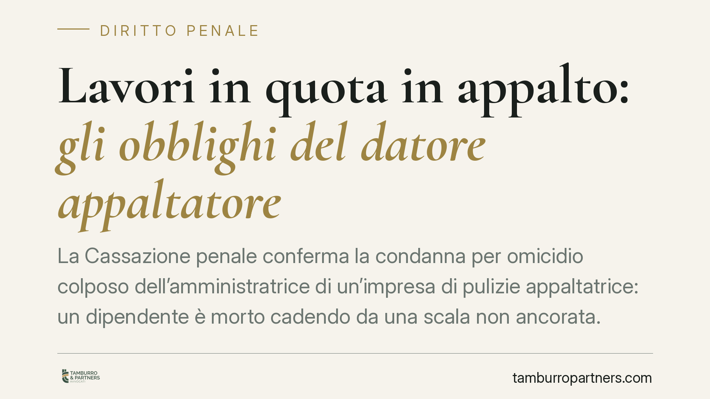

Lavori in quota in appalto: gli obblighi del datore appaltatore
La Cassazione penale conferma la condanna per omicidio colposo dell'amministratrice di un'impresa di pulizie appaltatrice: un dipendente è morto cadendo da una scala non ancorata. La pronuncia ribadisce che gli obblighi di valutazione dei rischi, formazione e fornitura dei dispositivi di protezione valgono anche quando il lavoro in quota è occasionale e svolto in appalto.

Il caso
Un lavoratore di un'impresa di pulizie precipita da una scala non ancorata mentre opera, in regime di appalto, presso un teatro committente. L'infortunio è mortale. La responsabile dell'impresa appaltatrice viene condannata per omicidio colposo (art. 589 c.p.) e la Cassazione penale, Sez. IV, conferma la decisione di merito.
Trattandosi di pronuncia recente, gli estremi completi (numero e anno) risultano in corso di pubblicazione: ci limitiamo quindi a richiamarne il contenuto argomentativo, senza attribuire riferimenti non verificabili.
Inquadramento normativo
Il cuore della vicenda è il lavoro in quota, definito dall'art. 107 del D.lgs. 81/2008 come l'attività lavorativa che espone il lavoratore al rischio di caduta da un'altezza superiore a due metri rispetto a un piano stabile. La soglia dei due metri non è un dettaglio formale: segna il confine oltre il quale scattano obblighi specifici di prevenzione.
Da quella definizione discendono le misure degli articoli successivi. L'art. 111 impone al datore di privilegiare le misure di protezione collettiva rispetto a quelle individuali e di scegliere l'attrezzatura più idonea in funzione del rischio. L'art. 113 detta i requisiti delle scale: devono essere stabili, correttamente posizionate e, dove necessario, vincolate per impedirne lo scivolamento. Una scala non ancorata è, in questa cornice, una violazione diretta.
Sul piano dell'appalto opera l'art. 26 del D.lgs. 81/2008: committente e appaltatore hanno un obbligo di cooperazione e coordinamento. Attenzione alla ripartizione: il Documento Unico di Valutazione dei Rischi da Interferenze (DUVRI) è redatto dal committente, mentre l'appaltatore è tenuto a valutare i rischi propri della sua attività e a fornire al committente le relative informazioni. L'appaltatore, insomma, non si libera dagli obblighi perché opera in casa d'altri.
Perché la Cassazione conferma
La condanna si regge su una catena logica precisa. Il datore di lavoro è titolare di una posizione di garanzia: ha l'obbligo giuridico di impedire eventi dannosi a carico dei propri dipendenti. Tale posizione trova fondamento nell'art. 2087 c.c., che impone l'adozione delle misure necessarie a tutelare l'integrità fisica del lavoratore, ed è ribadita dall'art. 299 del D.lgs. 81/2008 sul datore di fatto.
Qui opera il criterio della cosiddetta causalità della colpa. Non basta accertare che l'evento sia materialmente derivato dalla caduta: occorre verificare che la condotta doverosa omessa — ancorare la scala, fornire dispositivi anticaduta, formare il lavoratore — avrebbe, con elevata probabilità logica, evitato l'evento. È il giudizio controfattuale sull'evitabilità: se la misura mancante avrebbe scongiurato la morte, il nesso tra colpa ed evento è integro.
Nel caso esaminato questo schema regge pienamente. La scala non ancorata viola l'art. 113; la mancata valutazione del rischio di caduta viola l'art. 107; l'assenza di formazione e di dispositivi aggrava il quadro. Ciascuna di queste omissioni rientra nell'area di rischio che il datore aveva il dovere di governare.
Un punto merita enfasi: l'occasionalità della mansione in quota non attenua nulla. La Corte esclude che il carattere sporadico dell'attività possa abbassare lo standard di tutela. Anche un singolo intervento in altezza fa scattare il regime pieno di prevenzione.
Implicazioni pratiche per l'impresa appaltatrice
Chi dirige un'impresa che esegue lavori presso terzi non può considerare la sicurezza una questione del committente. Gli obblighi di valutazione, formazione e dotazione restano in capo al datore appaltatore, che risponde penalmente degli infortuni evitabili occorsi ai propri dipendenti.
Resta possibile una delega di funzioni in materia di sicurezza, ma a condizioni rigorose: deve essere formale, avere data certa, individuare un soggetto dotato di competenza e attribuirgli autonomi poteri di organizzazione e di spesa. Una delega generica o priva di poteri effettivi non sposta la responsabilità.
Cosa fare in concreto
- Valutate il rischio di caduta prima di ogni attività che superi i due metri, anche se è sporadica, e mettete per iscritto la valutazione.
- Fornite dispositivi di protezione adeguati e attrezzature conformi: scale stabili e ancorate ex art. 113, privilegiando dove possibile le protezioni collettive.
- Formate e addestrate il personale sul lavoro in quota, documentando partecipazione e contenuti.
- Cooperate con il committente ex art. 26: acquisite il DUVRI, trasmettete le informazioni sui rischi specifici della vostra attività e verbalizzate il coordinamento.
- Se adottate una delega di funzioni, redigetela in forma scritta, specifica, con attribuzione di poteri di spesa, e verificatene l'attuazione nel tempo.
*Contributo informativo a cura di Tamburro & Partners - Avv. Giuseppe Tamburro. Non costituisce parere legale.*
Ogni condominio ha una storia a sé.
Se gestisci un'amministrazione e vuoi un confronto su una specifica questione condominiale, scrivi allo studio. Ti rispondiamo entro un giorno lavorativo.